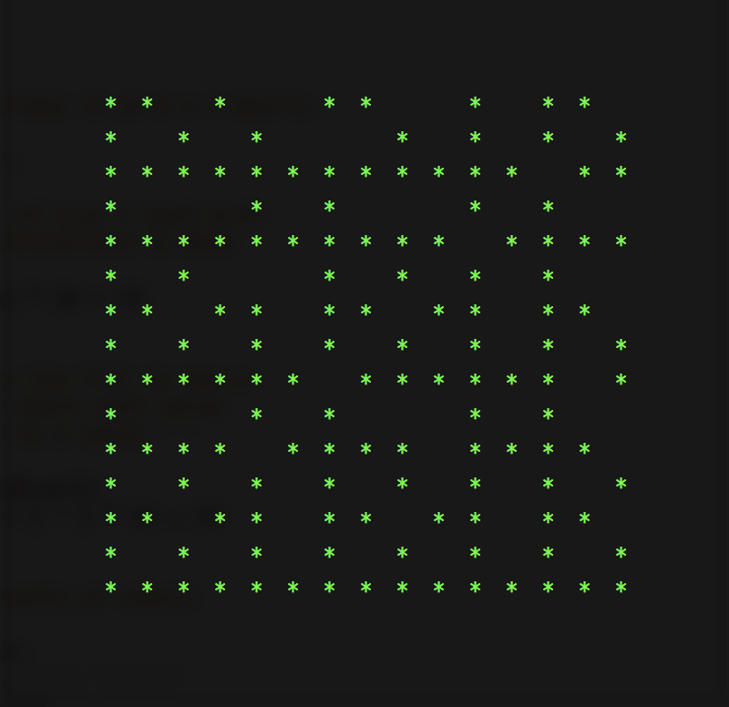

CMPT 306
Fall 2017
Homework #1
Due: By 11:59PM Wednesday September 6, 2017.
Overview
Two numbers are said to be co-prime if their only common
factor is 1. For example, 4 and 9 are co-prime as their only common
factor is 1. However, the numbers 4 and 10 are not co-prime.
(Co-prime numbers are also referred to as relatively prime.)
This assignment will involve writing a Python script that is passed
two values M and N, and it will determine all the co-prime pairs
between (1,1) and (M,N). It will present these co-primes by
outputting them as a grid. For example, the following displays the
co-prime pairs of of M = 15 N = 15

where an asterisk represents a co-prime pair. The following image
shows the relative positions of each pair (notice that (1,1) is the
lower left-hand corner) where the blue circle is the co-prime pair
(4,9), and the yellow circle indicates (4,10) is not co-prime.

Assignment
Jupyter Notebook User
Download the following script as a starting point: CoPrime.ipynb. (Save Link As...)
Modify number1 and number 2 to test your code.
Eclipse + PyDev User
Follow the instructions in this page to install Eclipse and PyDev.
Write a Python script that is passed two parameters representing the
pairs to generate. Download the following script as a starting point: CoPrime.py. (Save Link As...)
It currently expects two parameters passed on the command line.
This script provides a few helpful features. Notably, it declares
result as a list of lists. The statement
result = [None] * (m + 1)
declares result as a list containing (m
+ 1) entries where each entry contains the value None
(Python uses None to represent null.)
The statements
for i in range (0, m+1):
result[i] = ['^'] * (n + 1)
assigns each entry in result to be a list of
size (n + 1) where each entry is a '^'
character.
The subsequent for loop displays the contents
of result.
Please design and implement an algorithm that displays the co-prime
pairs from (1,1) to (m,n).
Submission
Submit your implementation of CoPrime.py to
Canvas by 11:59 PM on Wednesday, September 6, 2017.